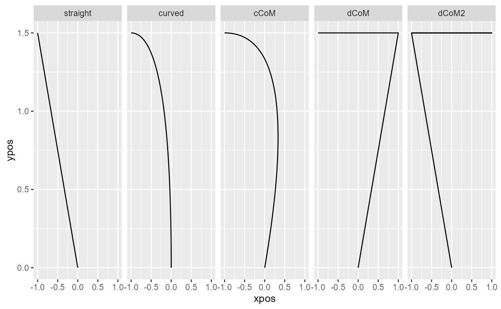

mt_map maps trajectories onto a predefined set of prototype
trajectories. It first computes distances between the trajectories and each
of the supplied trajectory types and then assigns each trajectory to the
prototype that produced the smallest distance.
mt_map(
data,
use = "ln_trajectories",
save_as = "prototyping",
dimensions = c("xpos", "ypos"),
prototypes = mousetrap::mt_prototypes,
weights = rep(1, length(dimensions)),
pointwise = TRUE,
na_rm = FALSE,
minkowski_p = 2,
use2 = "data",
grouping_variables = NULL
)Arguments
- data
a mousetrap data object created using one of the mt_import functions (see mt_example for details). Alternatively, a trajectory array can be provided directly (in this case
usewill be ignored).- use
a character string specifying which trajectory data should be used.
- save_as
a character string specifying where the resulting data should be stored.
- dimensions
a character vector specifying which trajectory variables should be used. Can be of length 2 or 3 for two-dimensional or three-dimensional trajectories respectively.
- prototypes
a trajectory array containing the prototypes the trajectories are mapped to. As a starting point, the trajectories stored in mt_prototypes can be used. See Details and Examples for selecting prototypes and creating new ones.
- weights
numeric vector specifying the relative importance of the variables specified in
dimensions. Defaults to a vector of 1s implying equal importance. Technically, each variable is rescaled so that the standard deviation matches the corresponding value inweights. To use the original variables, setweights = NULL.- pointwise
boolean specifying the way dissimilarity between the trajectories is measured (see Details). If
TRUE(the default),mt_distmatmeasures the average dissimilarity and then sums the results. IfFALSE,mt_distmatmeasures dissimilarity once (by treating the various points as independent dimensions).- na_rm
logical specifying whether trajectory points containing NAs should be removed. Removal is done column-wise. That is, if any trajectory has a missing value at, e.g., the 10th recorded position, the 10th position is removed for all trajectories. This is necessary to compute distance between trajectories.
- minkowski_p
an integer specifying the distance metric.
minkowski_p = 1computes the city-block distance,minkowski_p = 2(the default) computes the Euclidian distance,minkowski_p = 3the cubic distance, etc.- use2
an optional character string specifying where the data that contain the variables used for grouping can be found (in case
grouping_variablesare specified). Defaults to "data" asdata[["data"]]usually contains all non mouse-tracking trial data.- grouping_variables
a character string (or vector) specifying one or more variables in
use2. If specified, prototypes will be rescaled separately to match the coordinate system of the trajectories for each level of the variable(s). If unspecified (the default), the prototypes are rescaled in the same way across all trajectories.
Value
A mousetrap data object (see mt_example) with an additional
data.frame (by default called prototyping) that contains the
best fitting prototype for each trajectory (the number of the prototype is
specified under prototype, the label of the prototype under
prototype_label) and the distance of the trajectory to the best
fitting prototype (min_dist). If a trajectory array was provided
directly as data, only the data.frame containing the results will be
returned.
Details
Mouse trajectories often occur in distinct, qualitative types (see Wulff et
al., 2019; Wulff et al., 2021). Common trajectory types are linear
trajectories, mildly and strongly curved trajectories, and single and
multiple change-of-mind trials. mt_map allows to map trajectories to a
predefined set of trajectory types.
First, mt_map adjusts prototypes to match the coordinate system of the
trajectories specified by use. Next, mt_map computes the
distances between each trajectory and each of the supplied prototypes (see
mt_distmat) and then assigns each trajectory to the closest prototype
(i.e., the prototype that produced the smallest distance).
Mapping trajectories to prototypes requires that the endpoints of all trajectories (and added prototypes) share the same direction, i.e., that all trajectories end in the top-left corner of the coordinate system (mt_remap_symmetric or mt_align can be used to achieve this). Furthermore, it is recommended to use length normalized trajectories (see mt_length_normalize; Wulff et al., 2019).
References
Wulff, D. U., Haslbeck, J. M. B., Kieslich, P. J., Henninger, F., & Schulte-Mecklenbeck, M. (2019). Mouse-tracking: Detecting types in movement trajectories. In M. Schulte-Mecklenbeck, A. Kühberger, & J. G. Johnson (Eds.), A Handbook of Process Tracing Methods (pp. 131-145). New York, NY: Routledge.
Wulff, D. U., Haslbeck, J. M. B., & Schulte-Mecklenbeck, M. (2021). Measuring the (dis-)continuous mind: What movement trajectories reveal about cognition. Manuscript in preparation.
Examples
# Length normalize trajectories
KH2017 <- mt_length_normalize(KH2017)
# Map trajectories onto standard prototype set
KH2017 <- mt_map(KH2017,
use="ln_trajectories")
# Plot prototypes
mt_plot(mt_prototypes,facet_col="mt_id") +
ggplot2::facet_grid(.~factor(mt_id,levels=unique(mt_id)))

# Plot trajectories per assigned prototype
mt_plot(KH2017,use="ln_trajectories",
use2="prototyping",facet_col="prototype_label")
 # Map trajectories onto reduced prototype set
KH2017 <- mt_map(KH2017,
use="ln_trajectories",
prototypes=mt_prototypes[c("straight","curved","cCoM"),,],
save_as="prototyping_red")
# Map trajectories onto extended prototype set
# Add additional prototypes
mt_prototypes_ext <- mt_add_trajectory(mt_prototypes,
xpos = c(0,1,-1,1,-1), ypos = c(0,1.5,1.5,1.5,1.5), id = "dCoM3"
)
mt_prototypes_ext <- mt_add_trajectory(mt_prototypes_ext,
xpos = c(0,0,-1), ypos = c(0,1.5,1.5), id = "neutral"
)
# Map trajectories
KH2017 <- mt_map(KH2017,
use="ln_trajectories", prototypes=mt_prototypes_ext,
save_as="prototyping_ext")
# Map trajectories onto reduced prototype set
KH2017 <- mt_map(KH2017,
use="ln_trajectories",
prototypes=mt_prototypes[c("straight","curved","cCoM"),,],
save_as="prototyping_red")
# Map trajectories onto extended prototype set
# Add additional prototypes
mt_prototypes_ext <- mt_add_trajectory(mt_prototypes,
xpos = c(0,1,-1,1,-1), ypos = c(0,1.5,1.5,1.5,1.5), id = "dCoM3"
)
mt_prototypes_ext <- mt_add_trajectory(mt_prototypes_ext,
xpos = c(0,0,-1), ypos = c(0,1.5,1.5), id = "neutral"
)
# Map trajectories
KH2017 <- mt_map(KH2017,
use="ln_trajectories", prototypes=mt_prototypes_ext,
save_as="prototyping_ext")